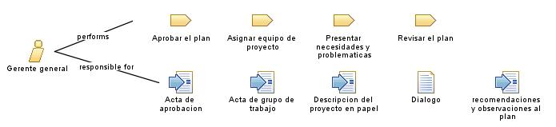

| Role: Gerente general |
 |
|
Relationships
 |
||
| Primary Performs | ||
|---|---|---|
| Modifies |
|
|
Main Description
El gerente general realiza algunas tareas importantes para iniciar el proyecto, tales como:
|
Staffing
| Skills | El gerente general tiene algunas habilidades como:
|
|---|---|
| Assignment Approaches | El gerente general tiene diferentes enfoques de asignacion, tales como:
|
Key Considerations
El gerente general:
|